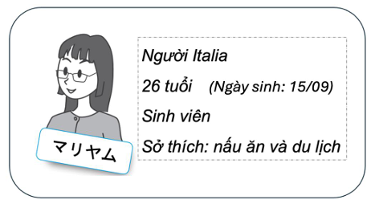

Tiếng Nhật · Luyện nói
Luyện Thi Nói Tiếng Nhật JPD113 & JPD123
Toàn bộ cấu trúc đề, thang điểm, 48 bài đọc và 247 câu hỏi hội thoại kèm gợi ý, đáp án mẫu và romaji — mở ra là học được ngay, không cần đăng nhập, không cần cài gì.
Tổng quan hai kỳ thi nói
JPD113 và JPD123 là hai học phần tiếng Nhật sơ cấp đầu tiên, và với phần lớn sinh viên thì bài thi nói của hai môn này là bài thi đầu tiên trong đời phải mở miệng nói tiếng Nhật trước một người thật. Đề không khó. Cái khó là bạn chỉ có một lượt, không được xoá đi làm lại, và thời gian chuẩn bị tính bằng giây chứ không phải bằng phút.
Bài thi diễn ra trực tiếp một–một với giám thị, kéo dài khoảng năm tới bảy phút, thang điểm 100. Cả hai môn đều chia thành hai phần lớn giống nhau về tinh thần: một phần đọc để đo phát âm và độ trôi chảy, một phần hỏi đáp để đo khả năng phản xạ. Điểm tác phong được chấm riêng và cộng dồn — đây là phần dễ ăn điểm nhất mà lại bị bỏ quên nhiều nhất.
Trang này gom lại toàn bộ ngân hàng đề mà mình đã luyện và đã đi thi: 48 bài đọc (13 bài của JPD113 và 35 bài của JPD123), 85 câu hỏi không tranh, và 68 bộ câu hỏi có tranh với tổng cộng 162 câu. Mỗi câu đều có ba lớp: câu tiếng Nhật, gợi ý nghĩa tiếng Việt, và một câu trả lời mẫu kèm romaji. Phần romaji và đáp án mặc định được gấp lại — bạn nên tự trả lời trước rồi mới mở ra đối chiếu, vì nhìn đáp án trước thì bài luyện biến thành bài đọc chép.
Cách dùng trang hiệu quả nhất không phải là đọc từ trên xuống dưới. Hãy nhảy thẳng tới phần tương ứng với môn bạn sắp thi, đọc kỹ mục cấu trúc và thang điểm để biết mình bị chấm cái gì, rồi mới xuống phần luyện. Toàn bộ nội dung nằm sẵn trong trang, không cần bấm nút nào để tải, và vẫn đọc được đầy đủ khi mất mạng nếu trình duyệt đã lưu bộ nhớ đệm.
JPD113 — cấu trúc đề thi
JPD113 nằm ở giai đoạn nhập môn: bảng chữ cái đã xong, ngữ pháp mới dừng ở mức giới thiệu bản thân, số đếm, ngày tháng, nghề nghiệp và quốc tịch. Đề thi vì thế cũng bám sát chừng đó, và phần lớn điểm mất đi không đến từ ngữ pháp sai mà đến từ việc đọc vấp hoặc im lặng quá lâu.
- Đề thi gồm 02 phần:
- 1. READING: Đọc câu văn
- Yêu cầu: chỉ cần đọc chính xác, không cần trả lời câu hỏi (30/100 điểm)
- 2. TALKING: Trả lời 04 câu hỏi của giám thị (60/100 điểm)
- (*) PRESENTING: Đánh giá tác phong, thái độ, phát âm (10/100 điểm)
- 1. READING: Đọc câu văn
- Các bước tiến hành:
- Phần READING:
- 1. Giám thị chọn bài đọc
- 2. Sinh viên chuẩn bị bài đọc trong 30 giây
- 3. Sinh viên đọc bài
- Phần TALKING:
- 1. QUESTION WITHOUT PICTURES (Câu hỏi không tranh):
- Giám thị chọn 1 trong 4 câu hỏi cho sẵn để hỏi sinh viên
- 2. QUESTIONS WITH PICTURES (Câu hỏi có tranh):
- Giám thị chọn 1 tranh và hỏi 03 câu hỏi liên quan để sinh viên trả lời dựa vào gợi ý
- 1. QUESTION WITHOUT PICTURES (Câu hỏi không tranh):
- Phần READING:
Ba mươi giây chuẩn bị nghe thì ngắn nhưng dùng đúng cách là đủ. Trong ba mươi giây đó, đừng cố dịch cả bài. Hãy quét nhanh tìm ba thứ: các con số (tuổi, giờ, ngày), các từ katakana (thường là tên riêng hoặc từ mượn, rất dễ đọc sai), và vị trí các trợ từ は, の, を để biết trước mình sẽ ngắt hơi ở đâu.
JPD123 — cấu trúc đề thi
JPD123 nặng hơn hẳn. Bài đọc dài hơn, chuyển từ mấy câu giới thiệu rời rạc sang một đoạn văn có mạch, và trọng số điểm của phần đọc tăng từ 30 lên 45. Phần hỏi đáp cũng gộp cả câu có tranh lẫn câu không tranh vào chung một lượt bốc thăm, nên bạn không biết trước mình sẽ gặp dạng nào.
- Đề thi gồm 02 phần:
- 1. READING: Đọc trôi chảy một đoạn văn (45/100 điểm)
- 2. Q&A: Trả lời 3 câu hỏi của giám thị (gồm câu hỏi có tranh & không tranh) (45/100 điểm)
- (*) PRESENTING: Chào hỏi, tác phong, độ trôi chảy, phát âm (10/100 điểm)
- Các bước tiến hành:
- SV BẮT BUỘC mang theo giấy tờ tuỳ thân có ảnh (CCCD, thẻ SV…) khi đi thi
- SV vào phòng thi theo thứ tự gọi tên từ giám thị, đưa giấy tờ để giám thị kiểm tra
- SV bốc thăm ngẫu nhiên mã đề đọc (A-1, A-2…). Chuẩn bị 20s sau đó đọc bài
- Trả lời 3 câu hỏi ngẫu nhiên từ mã đề Q&A (B-1, B-2,…)
Điểm khác biệt về mặt thủ tục cần nhớ: JPD123 bắt buộc mang giấy tờ tuỳ thân có ảnh và bốc thăm mã đề, còn thời gian chuẩn bị bài đọc rút xuống chỉ còn hai mươi giây. Hai mươi giây với một đoạn văn dài gấp đôi nghĩa là bạn gần như không có thời gian để hiểu — bạn chỉ có thời gian để nhận diện mặt chữ. Đó là lý do vì sao luyện đọc to thành tiếng trước ngày thi quan trọng hơn nhiều so với việc học thuộc nghĩa.
Thang điểm và những lỗi bị trừ
Biết mình bị chấm cái gì thì luyện mới đúng chỗ. Đây là cách 100 điểm được chia ở hai môn:
| Phần thi | JPD113 | JPD123 |
|---|---|---|
| Đọc (READING) | 30 điểm | 45 điểm |
| Hỏi đáp (TALKING / Q&A) | 60 điểm — 4 câu | 45 điểm — 3 câu |
| Tác phong (PRESENTING) | 10 điểm | 10 điểm |
| Thời gian chuẩn bị bài đọc | 30 giây | 20 giây |
| Bốc thăm mã đề | Không | Có |
Mười điểm tác phong là mười điểm cho không. Chào khi vào phòng, ngồi thẳng, nhìn vào giám thị chứ không nhìn xuống bàn, và cảm ơn khi ra — chừng đó là đủ lấy trọn. Ngược lại, những lỗi bị trừ nhiều nhất trong phần hỏi đáp lại rất đời thường: im lặng quá năm giây, trả lời cụt lủn bằng một từ thay vì một câu hoàn chỉnh có です/ます, và trả lời bằng tiếng Anh khi bí.
Một chi tiết nhỏ nhưng ăn điểm: khi bị hỏi mà chưa nghĩ ra, đừng im. Hãy kéo dài một âm えーと hoặc ええと. Giám thị nghe thấy bạn đang xử lý bằng tiếng Nhật chứ không phải đang đứng hình, và bạn mua thêm được vài giây hợp lệ.
Lộ trình luyện bốn tuần
Bốn tuần là khoảng thời gian thực tế nếu bạn học đều mỗi ngày ba mươi phút. Ít hơn thì vẫn kịp, nhưng phải cắt bớt phần mở rộng và tập trung vào các dạng câu chắc chắn ra.
- Tuần 1 — đọc trôi trước, hiểu sau. Mỗi ngày đọc to hai bài đọc, không tra từ, không dịch. Mục tiêu duy nhất là mắt nhìn tới đâu miệng phát ra tới đó. Ghi âm lại buổi đầu và buổi cuối tuần để tự so sánh.
- Tuần 2 — trợ từ và ngắt hơi. Đọc lại chính những bài tuần 1, lần này gạch chân mọi trợ từ và cố tình ngắt một nhịp rất ngắn sau mỗi trợ từ. Đây là thứ khiến một bài đọc nghe có vẻ thành thạo dù vốn từ chưa nhiều.
- Tuần 3 — phản xạ hỏi đáp. Chuyển sang phần câu hỏi. Đọc câu hỏi, gấp đáp án lại, tự trả lời thành tiếng trong vòng năm giây, rồi mới mở đáp án mẫu ra đối chiếu. Sai không sao, chậm mới là vấn đề.
- Tuần 4 — chạy thử toàn phần. Nhờ một người bạn bốc ngẫu nhiên một bài đọc và ba tới bốn câu hỏi, bấm giờ đúng như thi thật. Làm ba lượt như vậy là đủ để cơ thể quen với áp lực.
Nguyên tắc xuyên suốt: luôn luyện thành tiếng. Đọc thầm trong đầu tạo ra ảo giác đã thuộc, nhưng cơ miệng không được huấn luyện thì tới phòng thi vẫn líu lưỡi. Và hãy ghi âm — nghe lại giọng của chính mình là cách phát hiện lỗi phát âm nhanh nhất, dù ba mươi giây đầu nghe sẽ hơi khó chịu.
Giọng đọc máy: nó là gì và không là gì
Đây là phần cần nói thẳng. Trong 48 bài đọc trên trang này, chỉ có 23 bài có bản thu thật (13 bài JPD113 và 10 bài JPD123). Toàn bộ phần còn lại — mọi câu hỏi, mọi câu trả lời mẫu, và 25 bài đọc — không có file âm thanh nào cả, và chưa từng có.
Thay vào đó, mỗi câu tiếng Nhật đều có một nút “Nghe” dùng bộ tổng hợp giọng nói sẵn có của trình duyệt (Web Speech API). Đây là đường phát âm thanh chính của trang, không phải phương án dự phòng. Nó hoàn toàn miễn phí, chạy ngay trên máy bạn, không gửi gì lên máy chủ nào, và không cần tải thêm một megabyte âm thanh nào.
Nút “Nghe” chỉ kêu khi máy bạn đã cài sẵn một giọng tiếng Nhật. Windows 10 và 11 có sẵn giọng Nayu/Ichiro nếu bạn thêm gói ngôn ngữ 日本語 trong Cài đặt → Thời gian và ngôn ngữ → Ngôn ngữ. macOS và iOS có giọng Kyoko, bật trong Cài đặt → Trợ năng → Nội dung nói → Giọng nói. Android tải giọng qua Google Text-to-Speech. Nếu máy chưa có giọng nào phù hợp, ô điều khiển ở cột bên phải sẽ nói rõ tình trạng thay vì để bạn bấm nút câm lặng mà không hiểu tại sao.
Ở cột bên phải bạn cũng chỉnh được giọng đọc và tốc độ. Mặc định để 0,9× vì tốc độ gốc thường nhanh hơn nhịp một bài thi sơ cấp. Khi mới luyện hãy hạ xuống 0,7×, tới tuần cuối thì đẩy lên 1,0× cho gần với nhịp nói thật của giám thị.
Bài đọc — READING
Phần đọc chiếm 30 điểm ở JPD113 và 45 điểm ở JPD123. Dưới đây là các bài đọc trong ngân hàng đề, kèm romaji và bản dịch tiếng Việt để bạn tự kiểm tra sau khi đã đọc xong — hãy đọc bản tiếng Nhật trước, mở romaji sau, vì quen nhìn romaji sẽ khiến mắt bạn lười nhận diện kana trong phòng thi.
- Bản thu thật: 23/48 bài
- Còn lại: giọng đọc máy
- Romaji và bản dịch: gấp sẵn, tự bấm mở
JPD113 — 13 bài đọc
Các bài của JPD113 đều ngắn, xoay quanh giới thiệu bản thân và giới thiệu người khác. Cả 13 bài đều có bản thu thật.
Đang chuẩn bị tải toàn bộ bài luyện JPD113…
JPD113 · Bài đọc 1 (Dễ)
はじめまして、私はアンナです。オーストラリア人です。さくら日本語学校の学生です。ことし、二十歳です。私のしゅみはおんがくとどくしょです。よろしくおねがいします。
Bản thu thật của giáo viên.
Hiện romaji
Hajimemashite, watashi wa Anna desu. Oosutoraria-jin desu. Sakura nihongo gakkou no gakusei desu. Kotoshi, hatachi desu. Watashi no shumi wa ongaku to dokusho desu. Yoroshiku onegaishimasu.
Hiện bản dịch tiếng Việt
Xin chào, tôi là Anna. Tôi là người Úc. Tôi là học sinh trường Nhật ngữ Sakura. Năm nay tôi 20 tuổi. Sở thích của tôi là âm nhạc và đọc sách. Rất vui được gặp bạn.
JPD113 · Bài đọc 2 (Dễ)
みなさん、おはようございます。こちらはキムさんです。キムさんはかんこく人です。キムさんのしゅみはすいえいとテニスです。いま、なごやたんきだいがくのがくせいです。学校で日本語をべんきょうしています。
Bản thu thật của giáo viên.
Hiện romaji
Minasan, ohayou gozaimasu. Kochira wa Kimu-san desu. Kimu-san wa kankoku-jin desu. Kimu-san no shumi wa suiei to tenisu desu. Ima, Nagoya tanki daigaku no gakusei desu. Gakkou de nihongo wo benkyou shiteimasu.
Hiện bản dịch tiếng Việt
Chào mọi người. Đây là anh/chị Kim. Kim là người Hàn Quốc. Sở thích của Kim là bơi lội và tennis. Hiện tại, Kim là sinh viên trường cao đẳng Nagoya. Kim đang học tiếng Nhật ở trường.
JPD123 — 35 bài đọc
Các bài của JPD123 dài hơn và có mạch câu chuyện. 10 bài đầu có bản thu thật; 25 bài còn lại dùng giọng đọc máy.
Đang chuẩn bị tải toàn bộ bài luyện JPD123…
JPD123 · Bài 1 (Cực kì dễ)
こんにちは！私はさとうです。おおさか大学のせんせいです。私のたんじょうびは4がつ5日です。しゅみはサッカーです。まいにちサッカーをします。ときどきこうえんにいって、ともだちといっしょにサッカーをします。しごとはいそがしいですが、たのしいです。
Bản thu thật của giáo viên.
Hiện romaji
Konnichiwa! Watashi wa Satou desu. Oosaka daigaku no sensei desu. Watashi no tanjoubi wa shigatsu itsuka desu. Shumi wa sakkaa desu. Mainichi sakkaa o shimasu. Tokidoki kouen ni itte, tomodachi to issho ni sakkaa o shimasu. Shigoto wa isogashii desu ga, tanoshii desu.
Hiện bản dịch tiếng Việt
Xin chào! Tôi là Sato. Tôi là giáo viên trường đại học Osaka. Sinh nhật của tôi là ngày 5 tháng 4. Vì sở thích của tôi là bóng đá nên tôi chơi bóng đá mỗi ngày. Thỉnh thoảng tôi đi công viên và cùng chơi bóng đá với bạn. Công việc bận rộn nhưng vui.
JPD123 · Bài 2 (Cực kì dễ)
おはようございます！こちらはリーさんです。リーさんはちゅうごく人です。かれのしゅみはおんがくです。 今、京都たんき大学の学生です。学校で日本語をべんきょうしています。ひまなときにはともだちとカラオケにいきます。
Bản thu thật của giáo viên.
Hiện romaji
Ohayou gozaimasu! Kochira wa Rii-san desu. Rii-san wa Chuugoku-jin desu. Kare no shumi wa ongaku desu. Ima, Kyouto tanki daigaku no gakusei desu. Gakkou de Nihongo o benkyou shite imasu. Hima na toki ni wa tomodachi to karaoke ni ikimasu.
Hiện bản dịch tiếng Việt
Xin chào! Đây là anh Lý. Anh Lý là người Trung Quốc. Sở thích của anh ấy là âm nhạc. Hiện tại, anh ấy là sinh viên trường đại học ngắn hạn Kyoto. Anh ấy học tiếng Nhật ở trường, và khi rảnh rỗi thì đi karaoke với bạn.
Câu hỏi không tranh
Đây là dạng câu hỏi giám thị hỏi trực tiếp về bản thân bạn: tên, quốc tịch, tuổi, nghề nghiệp, sở thích, gia đình, thời gian biểu. Vì hỏi về chính bạn nên đáp án mẫu chỉ là khung — chỗ ________ là chỗ bạn điền thông tin thật của mình. Hãy chuẩn bị sẵn câu trả lời của riêng bạn cho từng câu, đừng đợi tới phòng thi mới nghĩ.
JPD113 — 22 câu
JPD113 · Câu hỏi không tranh 1
おなまえは？
Tên bạn là gì?
Hiện romaji câu hỏi
Onamae wa?
Hiện câu trả lời mẫu
わたしのなまえは________です。
Watashi no namae wa ________ desu.
JPD113 · Câu hỏi không tranh 2
おくには どちらですか。
Bạn đến từ nước nào?
Hiện romaji câu hỏi
Okuni wa dochira desu ka.
Hiện câu trả lời mẫu
ベトナムです。
Betonamu desu.
JPD113 · Câu hỏi không tranh 3
おしごとは？
Công việc của bạn là gì?
Hiện romaji câu hỏi
Oshigoto wa?
Hiện câu trả lời mẫu
わたしのしごとは________です。
Watashi no shigoto wa ________ desu.
JPD123 — 63 câu
JPD123 · Câu hỏi không tranh 1
あなたの まちは どんな ところですか。
Thành phố của bạn là nơi như thế nào?
Hiện romaji câu hỏi
Anata no machi wa donna tokoro desu ka.
Hiện câu trả lời mẫu
わたしの まちは にぎやかです。デパートや レストランが たくさん あります。そして、きれいな かわも あります。
Watashi no machi wa nigiyaka desu. Depaato ya resutoran ga takusan arimasu. Soshite, kirei na kawa mo arimasu.
JPD123 · Câu hỏi không tranh 2
休みの日に なにを しますか。
Ngày nghỉ bạn làm gì?
Hiện romaji câu hỏi
Yasumi no hi ni nani o shimasu ka.
Hiện câu trả lời mẫu
休みの日に ともだちと えいがを みます。それから、いっしょに レストランで ごはんを たべます。
Yasumi no hi ni tomodachi to eiga wo mimasu. Sorekara, issho ni resutoran de gohan wo tabemasu.
JPD123 · Câu hỏi không tranh 3
日本の たべもので なにが いちばん すきですか。どうしてですか。
Trong các món ăn Nhật Bản bạn thích nhất món gì? Tại sao?
Hiện romaji câu hỏi
Nihon no tabemono de nani ga ichiban suki desu ka. Doushite desu ka.
Hiện câu trả lời mẫu
すしが いちばん すきです。とても おいしいですから。
Sushi ga ichiban suki desu. Totemo oishii desu kara.
Câu hỏi có tranh
Giám thị đưa ra một tấm tranh rồi hỏi quanh nó. Số câu không cố định: trong bộ đề dưới đây, 30 bộ chỉ có một câu, phần còn lại hai đến bốn câu, và vài bộ lẻ lên tới bảy hoặc mười một câu. Đừng học theo kiểu "trả ba câu là xong" — cứ chuẩn bị để bị hỏi tiếp. Khác với dạng trên, ở đây bạn không được bịa — mọi thông tin phải lấy từ tranh. Cái bẫy lớn nhất là trả lời bằng một từ: khi được hỏi この人のなまえは？ thì đáp án đủ điểm là một câu hoàn chỉnh có です, không phải mỗi cái tên trống không.
Dưới đây là 68 bộ tranh, tổng cộng 162 câu hỏi. 67 bộ có kèm ảnh gốc của đề (một bộ JPD123 mình không còn ảnh), tải chậm dần khi bạn cuộn tới để không làm nặng trang.
JPD113 — 6 bộ tranh
JPD113 · Bộ câu hỏi có tranh 1

JPD113 · Tranh 1 · Câu 1
この人のなまえは？
Tên của người này là gì?
Hiện romaji câu hỏi
Kono hito no namae wa?
Hiện câu trả lời mẫu
マリヤムさんです。
Mariamu-san desu.
JPD113 · Tranh 1 · Câu 2
マリヤムさんはなんさいですか？
Mariamu-san bao nhiêu tuổi?
Hiện romaji câu hỏi
Mariamu-san wa nansai desu ka?
Hiện câu trả lời mẫu
マリヤムさんは26さいです。
Mariamu-san wa 26-sai desu.
JPD113 · Tranh 1 · Câu 3
マリヤムさんの おしごとはなんですか？
Mariamu-san nghề nghiệp là gì?
Hiện romaji câu hỏi
Mariamu-san no oshigoto wa nan desu ka?
Hiện câu trả lời mẫu
マリヤムさんの おしごとはがくせいです。
Mariamu-san no oshigoto wa gakusei desu.
JPD113 · Tranh 1 · Câu 4
マリヤムさんは学生ですか？
Mariamu-san có phải là sinh viên không?
Hiện romaji câu hỏi
Mariamu-san wa gakusei desu ka?
Hiện câu trả lời mẫu
はい、マリヤムさんは学生です。
Hai, Mariamu-san wa gakusei desu.
JPD113 · Tranh 1 · Câu 5
マリヤムさんの お国はどちらですか？
Mariamu-san đến từ nước nào?
Hiện romaji câu hỏi
Mariamu-san no okuni wa dochira desu ka?
Hiện câu trả lời mẫu
マリヤムさんの お国はイタリアです。
Mariamu-san no okuni wa Itaria desu.
JPD113 · Tranh 1 · Câu 6
マリヤムさんはイタリアじんですか？
Mariamu-san có phải là người Ý không?
Hiện romaji câu hỏi
Mariamu-san wa Itaria-jin desu ka?
Hiện câu trả lời mẫu
はい、マリヤムさんはイタリアじんです。
Hai, Mariamu-san wa Itaria-jin desu.
JPD123 — 62 bộ tranh
JPD123 · Bộ câu hỏi có tranh 1
JPD123 · Tranh 1 · Câu 1
ペキンはちゅうごくのどこですか
Peking ở đâu của Trung Quốc?
Hiện romaji câu hỏi
Pekin wa chuugoku no doko desu ka
Hiện câu trả lời mẫu
ペキンは ちゅうごくの きたです。
Pekin wa chuugoku no kita desu.
Mẹo phòng thi
Cho JPD113
- Đọc to và rõ ràng, không cần đọc nhanh
- Khi ngập ngừng thì dùng えーと hoặc あのう, đừng "ờ ờ" tiếng Việt. Kéo dài một chữ e thành "eeeeee" cũng không phải tiếng Nhật — えーと là hai âm có hình, nghe ra là bạn đang nghĩ bằng tiếng Nhật.
- Ngắt hơi ở cuối cụm, không ngắt sau mọi trợ từ: わたしは… FPTのしゃいんです. Ngắt giữa の và từ đứng sau nó là tách đôi một cụm, nghe rời rạc hơn là chậm rãi.
- Tiếng Nhật không có dấu như tiếng Việt, nên đừng gán dấu sắc hay dấu huyền cho từng chữ. Cái thật sự cần để ý là cao độ theo cả từ (lên rồi giữ, hoặc cao rồi xuống) và ngữ điệu cuối câu: câu hỏi 〜か thì lên giọng, câu kể thì hạ xuống. Trợ từ は không phải chỗ để nhấn.
- Ghi âm và nghe lại giọng của mình để cải thiện
- Chuẩn bị bài đọc trong 30 giây trước khi bắt đầu
- Ôn kĩ phần Ngày Tháng Giờ Phút vì nó sẽ ra rất nhiều, đặc biệt là Ngày rất là khó
Cho JPD123
- Dạng ra nhiều nhất là どこ — 33 trong 62 bộ tranh. Câu trả lời đi với 〜に あります／います: に chỉ chỗ một vật ở, còn で chỉ chỗ một hành động diễn ra. よこはまで なにが ありますか là sai, phải là よこはまに.
- 20 bộ hỏi ở thể quá khứ 〜ましたか, và câu trả lời phải quá khứ theo: 食べました, きれいでした. Tính từ -い là たのしかったです, không phải たのしいでした — đây là lỗi bị trừ nhiều nhất.
- 12 bộ theo mẫu AからBまで〜で どのくらいですか. Đáp án cần đủ ba phần: số + じかん／ふん + ぐらい かかります. Thiếu かかります là câu chưa xong.
- 16 bộ cuối đều là thể 〜ています, nên chia thể て phải thuộc trước khi vào phòng thi. Sai thể て thì mất điểm ngay từ câu đầu và không cứu lại được.
- Trong nhóm đó để ý trợ từ: hỏi なにを していますか thì đáp 〜さんは …ています; chỉ khi bị hỏi だれが していますか (5 bộ) mới dùng が. Đảo hai cái này là bạn đang trả lời một câu hỏi khác.
- Đề dùng rất nhiều tên người và địa danh nước ngoài (ナタポン, カルロス, フィレンツェ). Đọc theo katakana và giữ đúng độ dài âm — kéo dài sai một âm là thành một từ khác.
Áp dụng cho cả hai môn
- Vào phòng thi hãy chào trước: しつれいします khi vào, ありがとうございました khi ra. Đây là điểm tác phong, và nó gần như tự động.
- Nói to hơn mức bạn nghĩ là đủ. Trong phòng thi ai cũng tự động hạ giọng, và giám thị không chấm cao được cái mình phải căng tai ra nghe.
- Nếu đọc sai một từ, đừng quay lại sửa nhiều lần. Đọc lại đúng một lần rồi đi tiếp — dừng lại sửa tới sửa lui tốn điểm trôi chảy hơn là bản thân lỗi sai.
- Trả lời trọn câu. がくせいです được điểm, chỉ nói がくせい thì không.
- Không hiểu câu hỏi thì hỏi lại bằng tiếng Nhật: すみません、もういちどおねがいします. Hỏi lại bằng tiếng Nhật không bị trừ điểm; im lặng thì có.